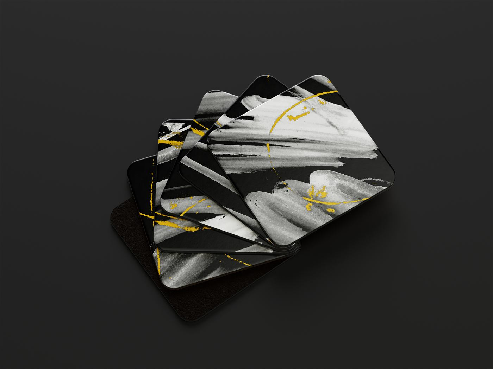

Personal / Gráfica
Jazz · hard bop
Hard
bop.

HARDBOP
Sobre el proyecto
Sistema gráfico inspirado en el jazz hard bop. La propuesta combina un afiche y una serie de posavasos para convertir el ritmo, la improvisación y la energía del género en una familia visual reconocible.
Vista rápida / arrastra
Ritmo en
capas.
Presiona o arrastra la tarjeta frontal para recorrer el afiche y la serie de posavasos.
Mockup

01 / 05

03 / 05

05 / 05
Recorrido visual
01 / 06Mockup del sistema · 01
Haz clic para acercar · usa las flechas para continuar